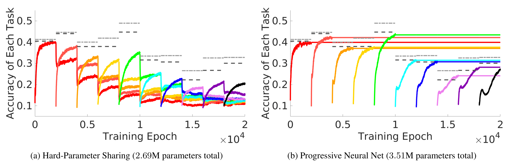
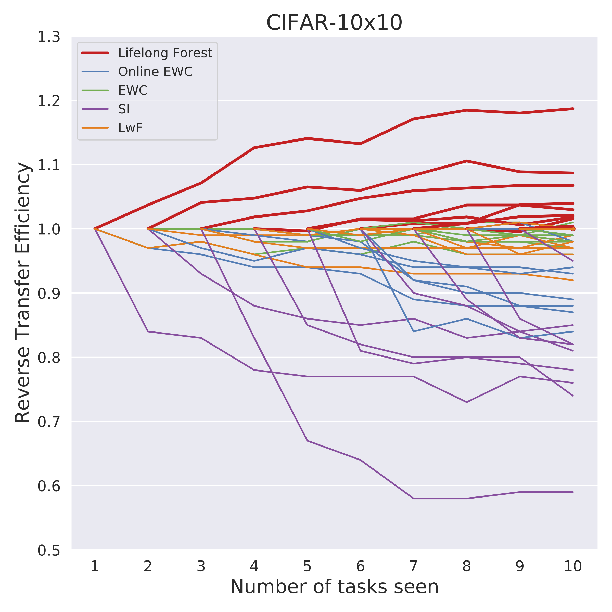
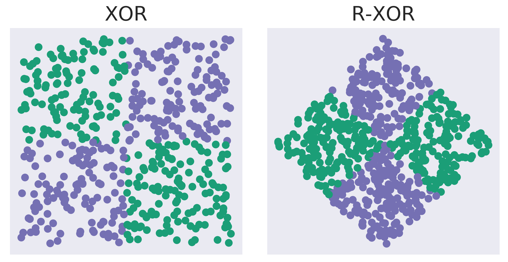
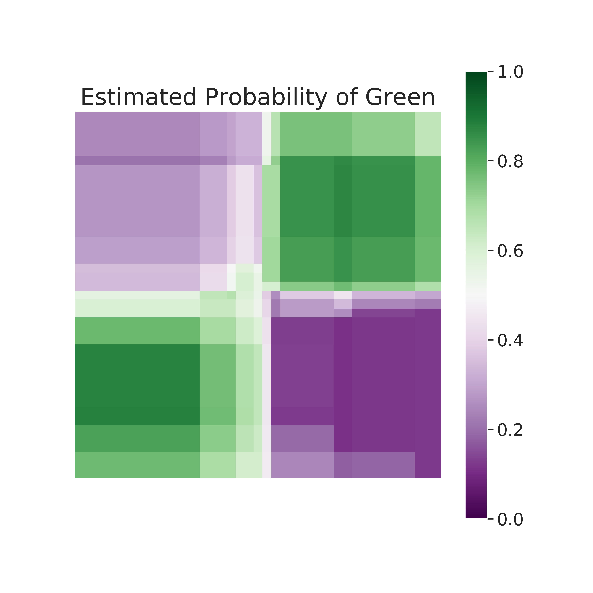
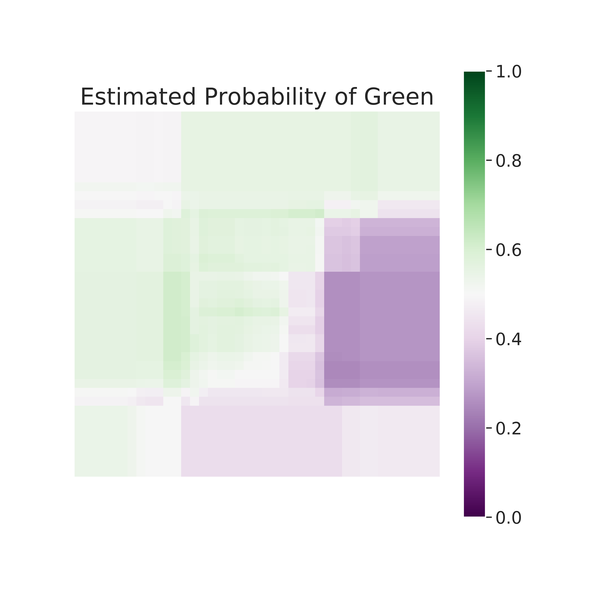
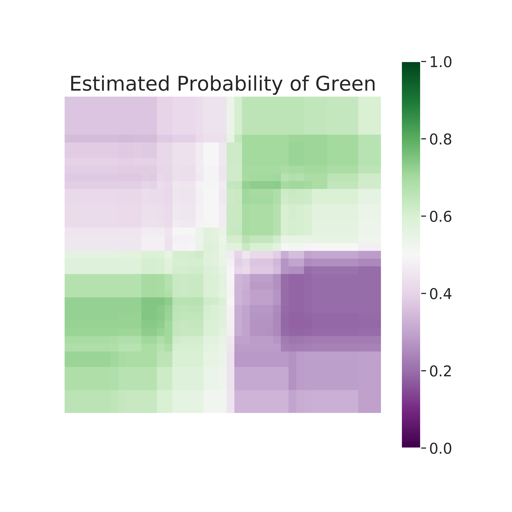
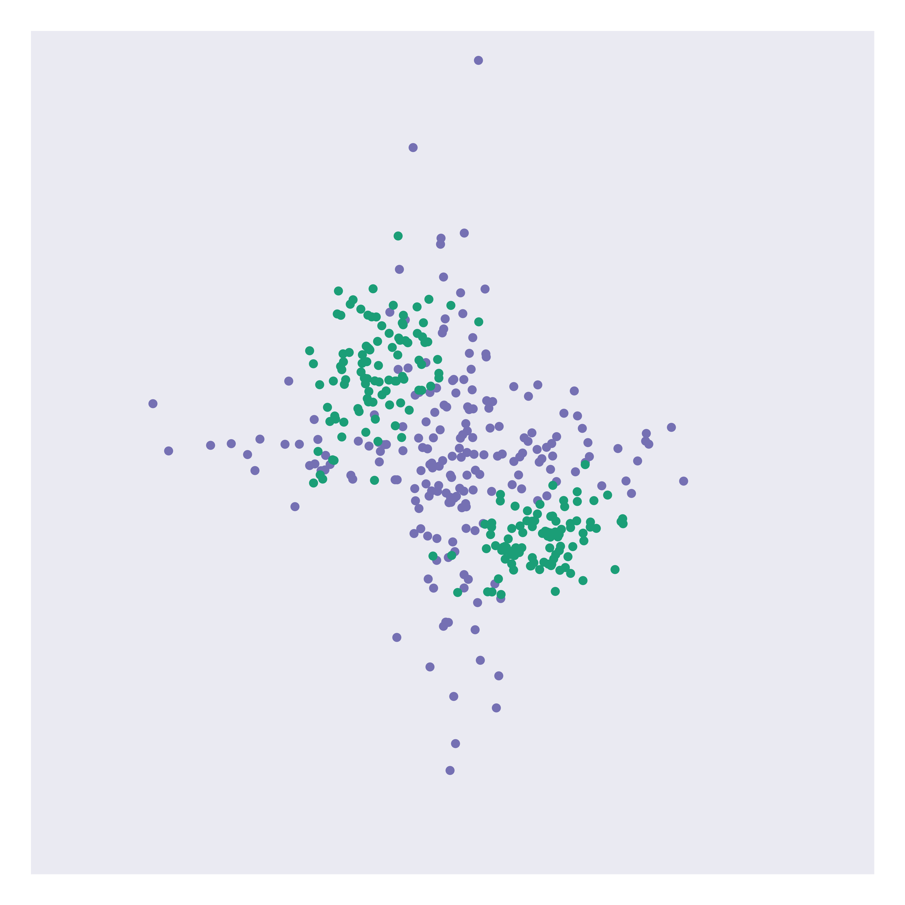
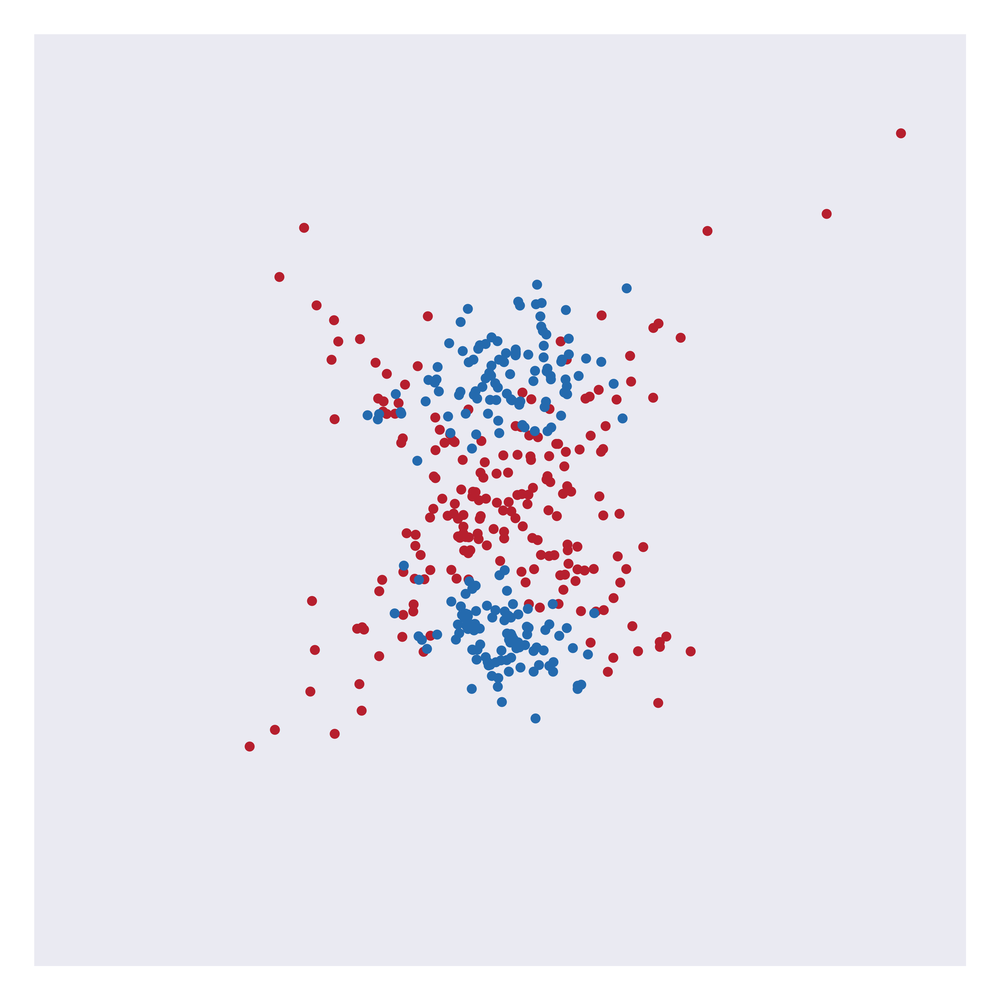
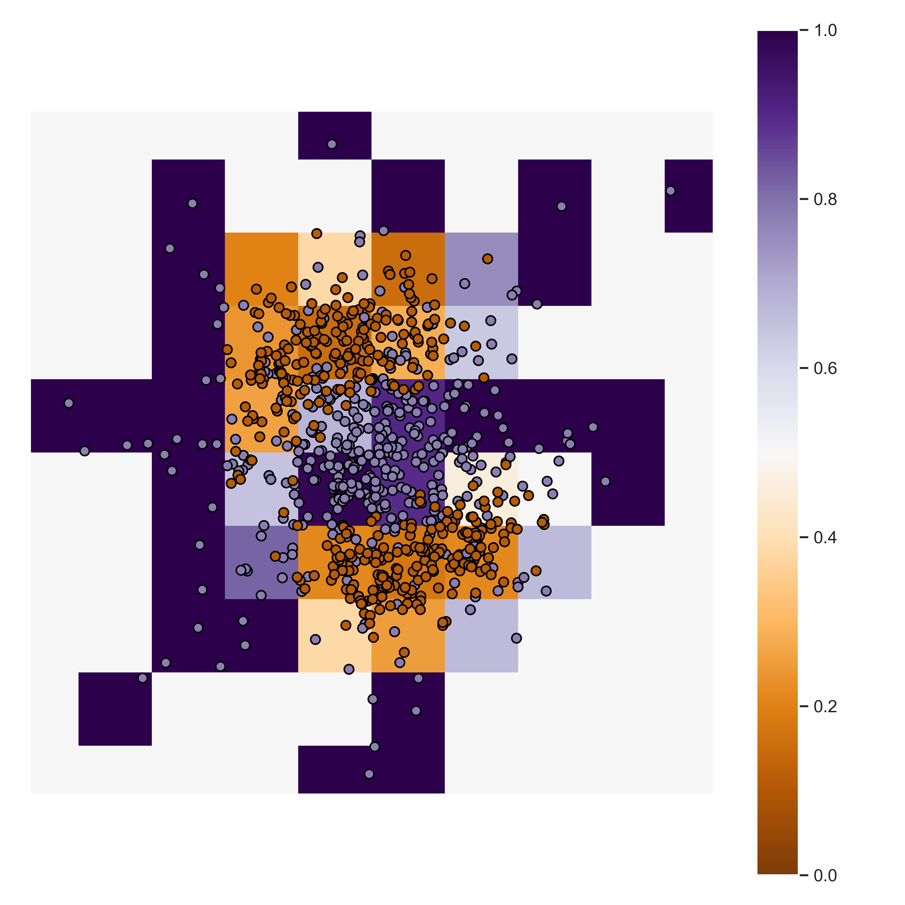

class:inverse # Lifelong Learning Joshua T. Vogelstein, BME@JHU, [neurodata](https://neurodata.io) --- class: inverse ## What is Learning? <img src="images/Vapnik71b.png" style="width:400px;"/> <img src="images/Valiant84.png" style="width:400px;"/> <img src="images/Mitchell97a.png" style="width:400px;"/> --- class: inverse ## What is Learning? "An agent $f$ learns from data $D_n$ with respect to task $T$ with performance measure $\mathcal{E}$, if $f$'s performance at task $T$ improves with $D_n$.'' -- Tom Mitchell, 1997 (not exact quote) --- class:inverse ## What is Learning? Generalization error $\mathcal{E}$ is the expected risk with respect to training dataset: $$ \mathcal{E}\_T(f\_n) = \mathbb{E}_{P}[R(f_n(D_n))].$$ <br> $f$ learns from data iff $\mathcal{E}_T(f_n)$ is better than $\mathcal{E}_T(f_0)$, or more formally <br> $$\frac{\mathcal{E}_T(f_0)}{\mathcal{E}_T(f_n)} > 1.$$ --- class: inverse ## Consider a simple example - 2 classes: green and purple - we observe 100 points - each point has 2 features: dim1 and dim2 - we desire to .r[learn] a classifier that discriminates between these two classes --- class: inverse <img src="images/rock20/s2.png" style="position:absolute; top:0px; left:100px; height:100%;"/> --- class: inverse <img src="images/rock20/s3.png" style="position:absolute; top:0px; left:100px; height:100%;"/> --- class:inverse ## What do classifiers do? -- <br> learn: 1. partition feature space into "parts", 2. majority vote of points in each part determines that part's class. predict: 2. for a new unlabeled point, find its part, 3. report the majority vote in its part. --- class:inverse ## What can regressors do? -- <br> learn: 1. partition feature space into "parts", 2. average of points in each part determines that part's prediction. predict: 2. for a new unlabeled point, find its part, 3. report the average vote in its part. --- class:inverse ## The fundamental theorem of statistical pattern recognition If each part is: 1. small enough, and 2. has enough points in it, then given enough data, one can learn *perfectly, no matter what*! $$\mathcal{E}\_T(f\_n) \rightarrow \mathcal{E}\_T^*$$ -- Stone, 1977 --- class:inverse ## Do brains do it? -- (brains obviously learn) 1. Do brains partition feature space? 2. Is there some kind of "voting" occurring within each part? --- class: inverse ## Brains partition - Feature space = the set of all possible inputs to a brain - Partition = only a subset of "nodes" respond to any given input - Examples 1. visual receptive fields 2. place fields / grid cells 3. sensory homonculus <br> <img src="images/rock20/Side-black.gif" style="height:230px;"/> <img src="images/rock20/Front_of_Sensory_Homunculus.gif" style="height:230px;"/> <img src="images/rock20/Rear_of_Sensory_Homunculus.jpg" style="height:230px;"/> --- class: inverse ## Brains vote - Vote = pattern of responses indicate which stimulus evoked response <img src="images/rock20/brody1.jpg" style="height:400px;" /> --- class: inverse ## Natural Questions 1. Do deep nets do this? (hint: not explicitly) 1. Can brains learn anything? (hint: no) 1. How do brains learn to partition feature space? 2. How do brains learn to vote? --- class: inverse ## What is Transfer Learning? - Given - data $D_0$, and an algorithm $f_0$ trained using only $D_0$. - data $D_n$ from possibly another distribution, - algorithm $f_n$ trained using both $D_0$ and $D_n$ "An algorithm $f$ .r[transfer] learns from data $D_n$ with respect to transfer learning task $T$ with performance measure $\mathcal{E}$, if $f$'s performance at task $T$ improves with $D_n$.'" -- $f$ .r[transfer] learns from data iff $$\frac{\mathcal{E}\_T(f\_0)}{\mathcal{E}\_T(f\_{n})} > 1.$$ --- class: inverse ## What is Multitask Learning? - Given $J$ tasks - algorithms $f_j$ trained using only $D_j$, for $j \in [J]$ - algorithm $f_n$ trained using $D_1, \ldots , D_J$ An algorithm $f_n$ .r[multitask] learns from datasets $\lbrace D_j \rbrace$ with respect to learning multitask $T$ with performance measure $\mathcal{E}$, if $f_n$'s performance at each task improves on average over $f_j$'s performance. -- $f$ .r[multitask] learns from data iff $$\frac{ \frac{1}{J} \sum\_j \mathcal{E}\_j(f\_j)}{\mathcal{E}\_T(f\_{n})} > 1.$$ i.e., on average, performance on each task improves by virtue of training also on other tasks --- class: inverse ## What is Lifelong Learning? - Given a sequence of $n$ samples, each associated with a task - algorithms $f_j$ trained using only $D_j$, for $j \in [J]$ - algorithm $f_n$ trained using $D_1, \ldots , D_J$ An algorithm $f_n$ .r[lifelong] learns from datasets $\lbrace D_j \rbrace$ with respect to learning multitask $T$ with performance measure $\mathcal{E}$, if $f_n$'s performance at each task improves on average over $f_j$'s performance. -- $f$ .r[lifelong] learns from data iff $$\frac{ \frac{1}{J} \sum\_j \mathcal{E}\_j(f\_j)}{\mathcal{E}\_T(f\_{n})} > 1.$$ i.e., on average, performance on each task improves by virtue of training also on other tasks --- class:inverse ## Forward and Backward Transfer Forward Transfer Efficiency: improving performance on future tasks given past data Backward Transfer Efficiency: improving performance on past tasks give future data --- class: inverse, middle Can brains do it? -- Yup. --- class: inverse ## Honey Bees can forward transfer <img src="images/rock20/honeybee1.jpg" style="position:absolute; top:150px; width:80%; "/> -- <br><br><br><br><br><br><br><br><br><br><br> - honey bees can also transfer to different sensory modality (smell) - honeybees do not forget how to do the first task - this is called "forward transfer" - bees learn the concept of "sameness" --- class: inverse ## What about .r[reverse transfer]? - In general, tasks are complex, built of sub-tasks; if learning a new complex task can improve sub-task performance (including sub-tasks involved in previous tasks), then performance in previous tasks will improve too. - "Knowledge and skills from a learner’s first language are used and reinforced, deepened, and expanded upon when a learner is engaged in second language literacy tasks." -- [American Council on the Teaching of Foreign Languages](https://www.actfl.org/guiding-principles/literacy-language-learning) --- class: inverse ## Can AI do it? -- "Training on a new set of items may drastically disrupt performance on previously learned items." -- McCloskey & Cohen, 1989 --- class: inverse ## 30 years later... <img src="images/rock20/masse1.png" style="width:600px;"/> <img src="images/rock20/flesch1.png" style="width:600px;"/> <img src="images/rock20/kirkpatrick1.png" style="width:600px;"/> --- class: inverse ## A Grand Challenge "Achieving artificial general intelligence requires that agents are able to learn and remember many different tasks." -- Kirkpatrick et al. (PNAS, 2017) "To get there, we will need something else too: a fundamental rethinking of how learning works. We need to invent a new kind of learning that leverages existing knowledge, rather than one that obstinately starts over from square one in every domain it confronts.”— Rebooting AI: Building Artificial Intelligence We Can Trust by Gary Marcus, Ernest Davis "These expectations, however, have met with fundamental obstacles that cut across many application areas. One such obstacle is adaptability or robustness... Intensive theoretical and experimental efforts toward “transfer learning,” “domain adaptation,” and “Lifelong learning” are reflective of this obstacle." -- Judea Pearl, 2019 --- class: inverse ## A Real Challenge Industry: - Amazon trained a recommender system on existing products, then a new product is launched, desire to update model to both recommend for new products - Google recommends websites, then new websites are created, want to update model Healthcare: - A new disease, test, treatment exists, want to update model Augmented Reality - Walking around, go to a new place, want to update model In all cases, re-training from scratch is just too expensive. --- class: inverse --- class: inverse ## A Lifelong Algorithm Given a sequence of datasets - For each training dataset - Learn a partition on that dataset - Learn most likely class in each part of that partition - For each previously learning partition, - Identify part of partition in which sample resides - Identify most likely class of that partition - Take a majority vote across all partitions predictions --- class: inverse ## A Transfer Example - .r[XOR] - Samples in the (0,0) and (1,1) quadrants are purple - samples in the (0,1) and (1,0) quadrants are green - .lb[N-XOR] - Samples in the (0,0) and (1,1) quadrants are green - samples in the (0,1) and (1,0) quadrants are purple - Optimal decision boundaries for both problems are coordinate axes <img src="images/l2m_18mo/xor_nxor.png" style="width:475px" class="center"/> --- class: inverse ## Lifelong Classifier <img src="images/columbia20/xor-nxor-all.png" style="height:300px;"> - .lb[Uncertainty Forest] uses 100 samples from XOR to learn partitions - .orange[Transfer Forest] uses $n$ samples from N-XOR to learn partitions - .r[Lifelong Forest] uses 100 samples from XOR and $n$ samples from N-XOR to learn partitions --- class: inverse ## Lifelong Classifier <img src="images/columbia20/xor-nxor-all2.png" style="height:500px;"> --- class:inverse ## Consider an example - *CIFAR 100* is a popular image classification dataset with 100 classes of images, - CIFAR 10x10 breaks the 100-class task problem into 10 10-class problems - There are 500 training images and 100 testing images per class. - Each image is 32x32 color images. <img src="images/l2m_18mo/cifar-10.png" style="position:absolute; left:250px; width:400px;"/> --- class: inverse ## Current State-of-the-Art  Seungwon Lee, James Stokes, and Eric Eaton. "[Learning Shared Knowledge for Deep Lifelong Learning Using Deconvolutional Networks](https://www.ijcai.org/proceedings/2019/393)." IJCAI, 2019. --- class:inverse ## Reverse Transfer Efficiency - y-axis indicates .r[reverse transfer efficiency] (RTE), - which is the ratio of "single task error" to "error using future tasks" - each task will have a line - if the line .r[increases], that means it is doing "reverse transfer" --- class:inverse  Only .r[Lifelong Forests] exhibits reverse transfer --- class: inverse --- class: inverse ## Models of the Brain - there are many - we are proposing one for how brains learn efficiently, especially with respect to sequential task learning - the main utility of a model is in suggesting the next experiment to perform --- class: inverse ## Next experiment to perform Experiment: - select a species that can transfer learn - teach an organism task 0 (source task) - teach it one of two "target tasks" - target task A is very similar to source task with respect to partitions - target task B is very different from source task Predictions: 1. same neurons will be activated for task 0 and task A 1. those neurons will exhibit distinct firing patterns for the two tasks 2. different neurons will be activated for tasks 0 and task B --- class: inverse, middle There are many models of the brain, in which ways is this one better? --- class:inverse ## The fundamental .r[conjecture] of transfer learning -- If each cell is: - small enough, and - has enough points in it, then given enough data, one can .r[transfer learn] *perfectly, no matter what*! -- jovo, 2020 --- class: inverse ## What next? - Nothing really special about "forests," could apply the same idea to any deep net. - Bees transfer across modalities; we don't know how to do that. - We (= anybody in AI) also don't know how to learn concepts like "sameness." --- class: inverse ## Summary - Learning can be done by partitioning + voting - Brains learn this way - Brains can transfer learn - Existing DeepNets can only forward transfer - Lifelong Forests can also reverse transfer - Neuro experiments suggested based on model - Theory promising to prove partitioning + voting is basically required --- class: inverse ## References 3. T. M. Tomita et al. [Sparse Projection Oblique Randomer Forests](https://arxiv.org/abs/1506.03410). arXiv, 2018. 1. R Guo, et al. [Estimating Information-Theoretic Quantities with Uncertainty Forests](https://arxiv.org/abs/1907.00325). arXiv, 2019. 1. R. Perry, et al. Manifold Forests: Closing the Gap on Neural Networks. preprint, 2019. 1. C. Shen and J. T. Vogelstein. [Decision Forests Induce Characteristic Kernels](https://arxiv.org/abs/1812.00029). arXiv, 2018 7. J. Browne et al. [Forest Packing: Fast, Parallel Decision Forests](https://arxiv.org/abs/1806.07300). SIAM ICDM, 2018. 1. M. Madhya, et al. [Geodesic Learning via Unsupervised Decision Forests](https://arxiv.org/abs/1907.02844). arXiv, 2019. 1. H. Helm et al. Lifelong Learning Forests, 2020 1. R. Mehta et al. A General Theory of Learnability, 2020. More info: [https://neurodata.io/sporf/](https://neurodata.io/sporf/) --- class:inverse ## Acknowledgements <!-- <div class="small-container"> <img src="faces/ebridge.jpg"/> <div class="centered">Eric Bridgeford</div> </div> <div class="small-container"> <img src="faces/pedigo.jpg"/> <div class="centered">Ben Pedigo</div> </div> <div class="small-container"> <img src="faces/jaewon.jpg"/> <div class="centered">Jaewon Chung</div> </div> --> <div class="small-container"> <img src="faces/yummy.jpg"/> <div class="centered">yummy</div> </div> <div class="small-container"> <img src="faces/lion.jpg"/> <div class="centered">lion</div> </div> <div class="small-container"> <img src="faces/violet.jpg"/> <div class="centered">baby girl</div> </div> <div class="small-container"> <img src="faces/family.jpg"/> <div class="centered">family</div> </div> <div class="small-container"> <img src="faces/earth.jpg"/> <div class="centered">earth</div> </div> <div class="small-container"> <img src="faces/milkyway.jpg"/> <div class="centered">milkyway</div> </div> <br> <div class="small-container"> <img src="faces/cep.png"/> <div class="centered">Carey Priebe</div> </div> <div class="small-container"> <img src="faces/randal.jpg"/> <div class="centered">Randal Burns</div> </div> <div class="small-container"> <img src="faces/cshen.jpg"/> <div class="centered">Cencheng Shen</div> </div> <!-- <div class="small-container"> <img src="faces/bruce_rosen.jpg"/> <div class="centered">Bruce Rosen</div> </div> <div class="small-container"> <img src="faces/kent.jpg"/> <div class="centered">Kent Kiehl</div> </div> --> <!-- <div class="small-container"> <img src="faces/mim.jpg"/> <div class="centered">Michael Miller</div> </div> <div class="small-container"> <img src="faces/dtward.jpg"/> <div class="centered">Daniel Tward</div> </div> --> <!-- <div class="small-container"> <img src="faces/vikram.jpg"/> <div class="centered">Vikram Chandrashekhar</div> </div> <div class="small-container"> <img src="faces/drishti.jpg"/> <div class="centered">Drishti Mannan</div> </div> --> <div class="small-container"> <img src="faces/jesse.jpg"/> <div class="centered">Jesse Patsolic</div> </div> <div class="small-container"> <img src="faces/falk_ben.jpg"/> <div class="centered">Benjamin Falk</div> </div> <!-- <div class="small-container"> <img src="faces/kwame.jpg"/> <div class="centered">Kwame Kutten</div> </div> --> <!-- <div class="small-container"> <img src="faces/perlman.jpg"/> <div class="centered">Eric Perlman</div> </div> --> <!-- <div class="small-container"> <img src="faces/loftus.jpg"/> <div class="centered">Alex Loftus</div> </div> --> <!-- <div class="small-container"> <img src="faces/bcaffo.jpg"/> <div class="centered">Brian Caffo</div> </div> --> <!-- <div class="small-container"> <img src="faces/minh.jpg"/> <div class="centered">Minh Tang</div> </div> --> <!-- <div class="small-container"> <img src="faces/avanti.jpg"/> <div class="centered">Avanti Athreya</div> </div> --> <!-- <div class="small-container"> <img src="faces/vince.jpg"/> <div class="centered">Vince Lyzinski</div> </div> --> <!-- <div class="small-container"> <img src="faces/dpmcsuss.jpg"/> <div class="centered">Daniel Sussman</div> </div> --> <!-- <div class="small-container"> <img src="faces/youngser.jpg"/> <div class="centered">Youngser Park</div> </div> --> <!-- <div class="small-container"> <img src="faces/shangsi.jpg"/> <div class="centered">Shangsi Wang</div> </div> --> <div class="small-container"> <img src="faces/tyler.jpg"/> <div class="centered">Tyler Tomita</div> </div> <div class="small-container"> <img src="faces/james.jpg"/> <div class="centered">James Brown</div> </div> <!-- <div class="small-container"> <img src="faces/disa.jpg"/> <div class="centered">Disa Mhembere</div> </div> --> <!-- <div class="small-container"> <img src="faces/gkiar.jpg"/> <div class="centered">Greg Kiar</div> </div> --> <!-- <div class="small-container"> <img src="faces/jeremias.png"/> <div class="centered">Jeremias Sulam</div> </div> --> <div class="small-container"> <img src="faces/meghana.png"/> <div class="centered">Meghana Madhya</div> </div> <!-- <div class="small-container"> <img src="faces/percy.png"/> <div class="centered">Percy Li</div> </div> --> <div class="small-container"> <img src="faces/hayden.png"/> <div class="centered">Hayden Helm</div> </div> <div class="small-container"> <img src="faces/rguo.jpg"/> <div class="centered">Richard Gou</div> </div> <div class="small-container"> <img src="faces/ronak.jpg"/> <div class="centered">Ronak Mehta</div> </div> <div class="small-container"> <img src="faces/jayanta.jpg"/> <div class="centered">Jayanta Dey</div> </div> <!-- TODO add jayata picture --> </div> <!-- <img src="images/funding/nsf_fpo.png" STYLE="HEIGHT:95px;"/> --> <!-- <img src="images/funding/nih_fpo.png" STYLE="HEIGHT:95px;"/> --> <img src="images/funding/darpa_fpo.png" STYLE=" HEIGHT:95px;"/> <!-- <img src="images/funding/iarpa_fpo.jpg" STYLE="HEIGHT:95px;"/> --> <!-- <img src="images/funding/KAVLI.jpg" STYLE="HEIGHT:95px;"/> --> <!-- <img src="images/funding/schmidt.jpg" STYLE="HEIGHT:95px;"/> --> --- class:center, inverse <img src="images/l_and_v.jpeg" style="position:absolute; top:0px; left:200px; height:100%;"/> --- class: middle, inverse ## .center[Extra Slides] <!-- resource constraints --> --- class: inverse ## Not So Clevr <img src="images/not-so-clevr.png" style="width:650px" /> --- class: inverse ## Adversarial Tasks - .r[XOR] vs .lb[N-XOR] is the easiest possible sequence of tasks - Consider an adversarial task: - a second task, .lb[Rotated-XOR (R-XOR)], which has zero information about the first task; - therefore, its data can only add noise and increase error  <!-- add two linear two-class classification problem w adverserial source task --> <!-- adverserial source task = either means reflected across x-axis or two gaussians centered at 0,0 --> --- class:inverse ## An Adversarial Example <!-- integrate this content into slide with figure --> - Left figures: - y-axis is error on .r[XOR] learned using 100 samples - x-axis is # of .lb[R-XOR] data samples - we used 100 .r[XOR] data samples - Right figures: - estimated probability of an observation from purple - learned using 100 .r[XOR] and 300 .lb[R-XOR] training samples --- class:inverse ## Decision Forests <div style="display:flex"> <div> <img src="images/l2m_18mo/L2M_18mo_xor_rxor_rf.png" alt="Snow" style="height:300px; width:300px"> </div> <div>  </div> </div> - Decision Forest .r[XOR] uses - data from .r[XOR] to learn partition - other data from .r[XOR] to vote - Since the number of samples from .r[XOR] is fixed, the error of DF .r[XOR] is constant --- class: inverse ## Transfer Forests <div style="display:flex"> <div> <img src="images/l2m_18mo/L2M_18mo_xor_rxor_transfer.png" alt="Snow" style="height:300px; width:300px"> </div> <div>  </div> </div> - Decision Forest .lb[R-XOR] uses - data from .lb[R-XOR] to learn partition - data from .r[XOR] to vote - Error only decreases slightly because the partitions are nearly uninformative (the informativeness is actually due to noisy estimate of the partition, the optimal partition is fully uninformative) <!-- fix posterior plots as above --> --- class:inverse ## Lifelong Forests <div style="display:flex"> <div> <img src="images/l2m_18mo/L2M_18mo_xor_rxor_lifelong.png" alt="Snow" style="height:300px; width:300px"> </div> <div>  </div> </div> - .green[Lifelong Forests] learn the optimal decision boundary using data from both (1) .r[XOR], and (2) .lb[R-XOR]. - Posteriors are learned using only data from .r[XOR] on both partitions. - Prediction is based on the estimated posterior averaged over both partitions. --- class: inverse ## Polytope space partitioning algorithms <img src="images/deep-polytopes.png" style="width:750px;"/> - NNs with ReLu nodes also partitions feature space into polytopes ([NIPS, 2014](http://papers.nips.cc/paper/5422-on-the-number-of-linear-regions-of-deep-neural-networks.pdf)). --- ### RF is more computationally efficient <img src="images/s-rerf_6plot_times.png" style="width:750px;"/> --- ### Lifelong learning algorithms - Fundamentally, a lifelong learning algorithm must summarize previous tasks via a useful representation to effectively use these tasks for learning a new task. - In supervised classification, the most useful representation of a task is its corresponding optimal decision boundary. - More generally, tessellating space into cells yields a representation/compression valuable for any subsequence inference task. --- ### What are Decision Forests? - Two things: 1. a partitioning of the space into mutually exclusive cells 2. an assignment of probabilities within each cell - This is true for decision trees, random forests, gradient boosting trees, etc. - Axis-aligned trees yield cells that are each right rectangular prisms (also called rectangular cuboids, rectangular parallelepiped, and orthogonal parallelipiped) - Axis-oblique trees yield cells that are more general polytopes Note: Deep Nets with ReLu activation function also tesselate space into polytopes --- ### Key Algorithmic Insight - Cells of a partition of space can be a universal representation - Partitions can be learned on a **per task** basis - Probabilities can be estimated given **any** partition, including those from other tasks - Use all data to estimate probabilities on the partitions learned separately for each task - Average probabilities learned on each partition to obtain final answer --- ### Algorithm (High-Level) - Input: $n$ points associated with $J$ different supervised classification/regression tasks - Output: A classifier/regressor function for each task - Algorithm: - for $j \in [J]$ - Learn partition of space using only data from task $j$ - Learn probabilities using partitions $1, \ldots, j$ - Output average over all $j$ probability estimates -- Notes: - This exact procedure can be applied as $J$ continues to increase - This procedure could be use any pair of algorithms for learning partitions and probabilities. - We focus on random forests for simplicity. - We assumed related measurement spaces, specifically, $\mathcal{Z}\_j= \lbrace \mathcal{X} \times \mathcal{Y}\_j \rbrace$ --- ### Basic L2M (unbounded storage) <!-- Given the above assumptions, all lifelong learning algorithms can be characterized as follows. --> For each $(z_t, j_t)$, 1. update .pu[transformer] using all available data: $h\_t (\lbrace z\_t,j\_t \rbrace) \rightarrow \hat{f}\_t$ 2. for each sample, apply .pu[transformer]: $\hat{f}\_t (z\_i) = \tilde{z}\_i$ 3. for each .pu[decider], update using all available data: $g\_t (\lbrace \tilde{z}\_t,j\_t \rbrace) \rightarrow \lbrace \hat{\eta}\_j \rbrace $ 4. apply .pu[decider]: $\hat{\eta}\_{j\_t}(\tilde{z}\_t) \rightarrow a\_t$ --- ### Basic L2M (bounded storage) For each $(z_t, j_t)$, 1. update .pu[transformer]: $h\_t ( z\_t,j\_t, \hat{f}\_{t-1} ) \rightarrow \hat{f}\_t$ 2. apply .pu[transformer]: $\hat{f}\_t (z\_t) = \tilde{z}\_t$ 3. update all .pu[deciders]: $g\_t ( \tilde{z}\_t,j\_t, \hat{\eta}\_{t-1} ) \rightarrow \lbrace \hat{\eta}\_j \rbrace $ 4. apply .pu[decider]: $\hat{\eta}\_{j\_t}(\tilde{z}\_t) \rightarrow a\_t$ --- ### Lifelong Forests - Assume data are batched into unique tasks - For each task, $ z_t | j_t = j$ 1. Learn a new forest using data only from task $j_t$ 2. Apply forest to each observation so far 3. For each task, update plurality/average vote per tree 4. Apply average vote for $z_t$ --- # Universal Slides --- ### What is Universal Transfer Learning? We say that $f$ **universally** transfers in setting $S$ iff $\exists \; \delta, n\_0 > 0$ such that $\forall n\_j > n\_0$: <!-- $\forall n,n' > n\_0$, $\exists \; \delta > 0$ such that: --> $\exists P,Q \in \mathcal{P}: TLE\_{n,n'}^{P,Q}(f) < 1 - \delta$ (sometimes better), and $\forall P,Q \in \mathcal{P}: TLE\_{n,n'}^{P,Q}(f) \leq 1 + \delta$ (never much worse). --- ### What is Universal MT Learning? We say that $f$ **universally** multi-task learns in settings $\vec{S}$ iff $\exists \; \delta, n\_0 > 0$ such that $\forall n\_j > n\_0$: $\exists \vec{P} \in \vec{\mathcal{P}}: MTE\_{\vec{n}}^{\vec{P}}(f) < 1 - \delta$ (sometimes better), and $\forall \vec{P} \in \vec{\mathcal{P}}: MTE\_{\vec{n}}^{\vec{P}}(f) \leq 1 + \delta$ (never much worse). --- ### What is Universal Lifelong Learning? We say that $f$ **universally** lifelong learns in settings $\vec{S}$ iff $\forall n\_j > n\_0$ and $\forall \vec{P} \in \vec{\mathcal{P}}$, lifelong learning holds. --- ## Consider the iris dataset - introduced by RA Fisher (inventor of modern statistics) - 150 points from 3 species of iris's - setosa, virginica, versicolor - 4 dimensions/features: - sepal length, sepal width, petal length, petal width --- class:inverse <img src="images/rock20/sphx_glr_plot_iris_dtc_001.png" style="position:absolute; top:0px; left:0px; height:100%;"/> --- class: inverse <img src="images/rock20/s2.png" style="position:absolute; top:0px; left:100px; height:100%;"/>/> --- class: inverse <img src="images/rock20/s3.png" style="position:absolute; top:0px; left:100px; height:100%;"/> --- class: inverse --- class: inverse <img src="images/rock20/s2.png" style="width:600px;", style="position:absolute; top:0px; left:100px; height:100%;"/>/> --- class: inverse <img src="images/rock20/s3.png" style="width:600px;", style="position:absolute; top:0px; left:100px; height:100%;"/>/> --- class: inverse /> --- class: inverse <img src="images/rock20/s5.png" style="width:600px;", style="position:absolute; top:0px; left:100px; height:100%;"/>/> --- class: inverse /> --- class: inverse <img src="images/rock20/s7.png" style="width:600px;", style="position:absolute; top:0px; left:100px; height:100%;"/>/> --- class: inverse <img src="images/rock20/s8.png" style="width:600px;", style="position:absolute; top:0px; left:100px; height:100%;"/>/> --- class: inverse /> --- ### What is Transfer Learning? - Given - data $D_0$, and an algorithm $f_0$ trained using only $D_0$. - data $D_n$ from possibly another distribution, - algorithm $f_n$ trained using both $D_0$ and $D_n$ "An algorithm $f$ .pu[transfer] learns from data $D_n$ with respect to transfer learning task $T$ with performance measure $\mathcal{E}$, if $f$'s performance at task $T$ improves over with $D_n$.'" -- $f$ .pu[transfer] learns from data iff $$\frac{\mathcal{E}\_T(f\_0)}{\mathcal{E}\_T(f\_{n})} > 1.$$ --- ### What is Multi-Task (MT) Learning? - Given - for $j=1,\ldots, J$ - data $D_j$, possibly from different distributions, - algorithm $f_j$ trained using only $D_j$, - algorithm $f_n$ trained using all $D_j$'s, - a multi-task risk (e.g., average risk across tasks). An algorithm $f$ .pu[multi-task] learns from data $D_n$ with respect to multi-task $T$ with overall performance measure $\mathcal{E}_T$, if $f$'s performance at task $T$ improves with $D_n$." -- $f_0$ .pu[multi-task] learns from data iff $$\frac{\mathcal{E}\_T( \lbrace f\_j \rbrace )}{\mathcal{E}\_T(f\_{n})} > 1.$$ --- ### What is Lifelong Learning? - Given - for $j=1,\ldots$ - data $D_j$, possibly from different distributions, - algorithm $f_j$ trained using only $D_j$, - algorithm $f_n$ .pu[sequentially] trained using all $D_j$'s, - a multi-task risk (e.g., average risk across tasks). An algorithm $f$ .pu[lifelong] learns from data $D_n$ with respect to lifelong task $T$ with overall performance measure $\mathcal{E}_T$, if $f$'s performance at task $T$ improves with $D_n$." -- $f$ .pu[lifelong] learns from data iff $$\frac{\mathcal{E}\_T( \lbrace f\_j \rbrace )}{\mathcal{E}\_T(f\_{n})} > 1.$$ --- ### Generalized Learning <br> | | $J>1$ | Sequential | | :---: | :---: | :---: | | Machine | 0 | 0 | | Multi-task | 1 | 0 | | Lifelong | 1 | 1 | --- ### Three Kinds of Lifelong Learning 1. Supervised: setting is provided for each data sample 2. Unsupervised: setting is not provided for any data sample 3. Semi-supervised: setting is sometimes provided for some data samples -- We largely focus on supervised setting hereafter. --- class: middle, inverse ## .center[General (Lifelong) Learning Machines] --- ### Machine Learning: Basic Set-Up Given 1. A task $ T $ 2. Observed data $ z\_1, z\_2, .., z\_n $ Assume 1. The $ z\_t $ are independent --- ### Constituents of Learning Machines 1. .pu[representation]: data are transformed into a representation space 2. .pu[transformer]: maps each point to the representation space 3. .pu[decider]: takes an action using the transformed data --- ### Example 1 Linear 2-class classification (we want to label black dot) <img src="images/l2m_18mo/cml_all_data.png" style="width:500px" class="center"/> --- #### Example 1.1 - Linear Discriminant Analysis 1. .pu[representation]: the real number line 2. .pu[transformer]: projection matrix that maps each feature vector onto real number line 3. .pu[decider]: threshold such that values above threshold are one class, and below are the other <img src="images/l2m_18mo/cml_linear.jpg" style="width:600px" class="center"/> <!-- diagram of linear classifier (projection from R^d to R then threshold) for two class, spherical gaussians --> <!-- figure of problem --> <!-- figure with representation --> <!-- figure showing transformation of one data point to the line --> <!-- figure showing decider acting on a the transformed data point --> --- #### Example 1.2 - Decision Tree 1. .pu[representation]: a partition of $ \mathbb{R}^{d} $ 2. .pu[transformer]: maps a data point to a cell of the partition 3. .pu[deciders]: plurality (or average) of elements per cell <img src="images/l2m_18mo/cml-tree.jpg" style="width:650px" class="center"/> <!-- diagram of a partition for two class, spherical gaussians --> <!-- figure of representation (partition) --> <!-- figure of a data point in a cell of the partition --> <!-- figure of classifying a data point in a cell of the partition --> --- #### Example 1.3 - Decision Forests 1. .pu[representation]: a set of partitions of $ \mathbb{R}^{d} $ 2. .pu[transformer]: maps a data point to a cell of each of the partitions 3. .pu[deciders]: average of decision trees (posterior probabilities) <img src="images/l2m_18mo/cml_forest.jpg" style="width:600px" class="center"/> Each tree uses a different subset of data to transform (partition) space